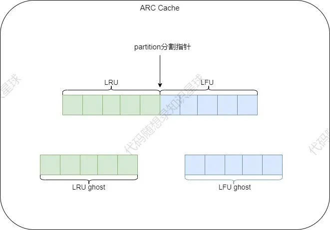
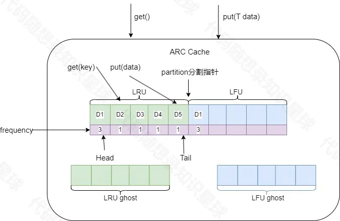

ARC算法
实际LFU也有自己的缺点，首先，引入访问频率机制可能会导致一些新加入的数据被排挤，并且频率统计会带来不小的额外开销，在频繁进出新数据的环境下也会比较吃力
定义
综合了两种策略的特点，当访问的数据趋向于访问最近的内容，会更多地命中LRU list，这样会增大LRU的空间；当系统趋向于访问频繁访问的内容时，会更多地命中LFU list，这样会增加LFU的空间。
执行过程
- 整个Cache分为两部分，LRU和LFU各占一半，根据不同的访问模式动态适应调整
partition分割指针的位置（不一定存在这个指针，只是说明会动态调整二者的内存大小），除此之外，LRU和LFU各自有一个ghost list（淘汰链表，分别用于存储从LRU和LFU中淘汰的数据，也可以叫做幽灵链表）。


- 在缓存中查找客户端需要访问的数据，如果没有命中，表示缓存穿透，将需要访问的数据从从磁盘中取出，从LRU对应链表的尾部（本代码使用尾插头出）。
- 如果命中且LFU链表中没有则判断该数据的访问次数是否大于
transformTime_（转换阈值，本代码设置为2），若大于则将该数据插入LFU对应链表中（一个块至少需要读取transformTime_次，并且要是最近请求的数据，才会被存储到LFU中）。于是，该数据块不仅仅只保存在LRU的缓存目录中，也将保存到LFU中。如果命中且LFU链表中存在，则将数据重新放入LFU链表中对应位置（访问频次计数+1），这样，那些真正被频繁访问的页面将一直呆在缓存中，不会被冷数据的加入而误淘汰，不经常访问的数据会向链表头部移动，最终被淘汰出去。 - 如果此时LRU缓存满了，则从LRU链表中淘汰表头部的数据，将淘汰数据的key放入LRU对应的
ghost list。然后在LRU的链表尾部添加新数据。如果ghost list的元素满了，按照先进先出的方式淘汰ghost list中的元素头部元素，然后再从尾部插入元素。 - 如未命中缓存的数据根据key发现在LRU对应的
ghost list中，则表示幽灵命中，缓存系统就可以知道，这是一个刚刚淘汰的页面，而不是第一次读取或者说很久之前读取的一个页面。于是根据这个信息来调整内部的partition分割指针以适应当下的访问模式。上述迹象说明当前的LRU缓存太小了，于是将partition分割指针右移一位(也就是LRU缓存空间+1，LFU缓存空间-1），并将命中的key数据从ghost list的中移除，将新数据从LRU链表尾部插入。 -
反之如果未命中缓存的数据根据key发现在LFU对应的
ghost中，则说明当前访问模式偏向于频繁访问经常被访问的那一些数据，说明当下LFU缓存空间太小了，对应partition分割指针左移一位，并将命中的key数据从ghost的中移除，将新数据从LRU链表尾部插入。 -
分割指针只是想象中的比喻物，在代码中实际上不存在这个分割指针，分割的操作会被几个函数控制
代码实现
ARC的代码实现相当复杂，需要分为四个板块，这可能也是ARC的缺点之一
ArcCacheNode
#pragma once
# include <memory>
namespace CopCache {
template <typename Key,typename Value>
class ArcNode
{
private:
Key key_;
Value value_;
size_t accessCount_;//对于该节点的访问频次
std::shared_ptr<ArcNode> prev_;
std::shared_ptr<ArcNode> next_;//前驱指针与后继指针
public:
//含参构造函数与无参构造函数
ArcNode():accessCount_(1),prev_(nullptr),next_(nullptr){}
ArcNode(Key key,Value value)
:key_(key)
,value_(value)
,accessCount_(1)
,prev_(nullptr)
,next_(nullptr)
{}
//定义获取键，值，访问频次函数
Key getKey() const { return key_; }
Value getValue() const { return value_; }
size_t getAccessCount() const { return accessCount_; }
//定义修改值与访问频次的函数
void setValue(const Value& value) { value_ = value; }
void incrementAccessCount() { ++accessCount_; }
//将lru与lfu定义为友元类，便于访问节点类
template <typename K, typename V> friend class ArcLruPart;
template <typename K, typename V> friend class ArcLfuPart;
};
}// coloop
- 节点部分，包含了对应节点的相关操作，以及节点的一些属性（键，值，访问次数，前驱与后继指针）
ArcCacheLruPart
#pragma once
#include "CopArcCacheNode.h"
#include <unordered_map>
#include <mutex>
namespace CopCache {
template <typename Key,typename Value>
class ArcLruPart
{
public:
//类型别名
using NodeType = ArcNode<Key, Value>;
using NodePtr = std::shared_ptr<NodeType>;
using NodeMap = std::unordered_map<Key, NodePtr>;
explicit ArcLruPart(size_t capacity, size_t transformThreshold)
:capacity_(capacity)
,ghostCapacity_(capacity)
,transformThreshold_(transformThreshold)
{
initializeLists();
}
bool put(Key key, Value value)
{
if (capacity_ == 0) return false;
//线程锁
std::lock_guard <std::mutex> lock(mutex_);
auto it = MainCache_.find(key);
if (it != MainCache_.end()) {
return updateExistingNode(it->second, value);
}
return addNewNode(key, value);
}
//传出两个参数 值 和 是否达到转换阈值判断
bool get(Key key, Value& value, bool& shouldTransform)
{
std::lock_guard <std::mutex> lock(mutex_);
auto it = MainCache_.find(key);
if (it != MainCache_.end())
{
//更新访问频次，并判断是否达到转换阈值
shouldTransform = updateNodeAccess(it->second);
value = it->second->getValue();
return true;
}
return false;
}
//检查幽灵缓存中是否存在对于节点
bool checkGhost(Key key)
{
auto it = GhostCache_.find(key);
if (it != GhostCache_.end())
{
removeFromGhost(it->second);
GhostCache_.erase(it);
return true;
}
return false;
}
//增加缓存容量
void increaseCapacity() { ++capacity_; }
// 减少缓存容量
bool decreaseCapacity()
{
if (capacity_ <= 0) return false;
//缓存满时需要驱逐一位缓存
if (MainCache_.size() == capacity_)
{
evictLeastRecent();
}
--capacity_;
return true;
}
private:
//初始化
void initializeLists() {
//连接主链表
mainHead_ = std::make_shared<NodeType>();
mainTail_ = std::make_shared<NodeType>();
mainHead_->next_ = mainTail_;
mainTail_->prev_ = mainHead_;
//连接幽灵链表
ghostHead_ = std::make_shared<NodeType>();
ghostTail_ = std::make_shared<NodeType>();
ghostHead_->next_ = ghostTail_;
ghostTail_->prev_ = ghostHead_;
}
//更新在缓存中的值
bool updateExistingNode(NodePtr node, const Value& value)
{
node->setValue(value);
moveToFront(node);
return true;
}
bool addNewNode(const Key& key, const Value& value)
{
if (MainCache_.size() >= capacity_)
{
//满缓存后需要驱逐最近最少访问节点
evictLeastRecent();
}
//构造新节点并存入缓存中，并将节点插入头部
NodePtr newNode = std::make_shared<NodeType>(key, value);
MainCache_[key] = newNode;
addToFront(newNode);
return true;
}
bool updateNodeAccess(NodePtr node)
{
//更新节点的访问次数，并且判断是否符合转换阈值
moveToFront(node);
node->incrementAccessCount();
return node->getAccessCount() >= transformThreshold_;
}
//移动节点至头部
void moveToFront(NodePtr node)
{
//从当前位置移除
node->prev_->next_ = node->next_;
node->next_->prev_ = node->prev_;
addToFront(node);
}
//并添加节点至头部
void addToFront(NodePtr node)
{
node->next_ = mainHead_->next_;
node->prev_ = mainHead_;
mainHead_->next_->prev_ = node;
mainHead_->next_ = node;
}
//驱逐最近最少访问节点
void evictLeastRecent()
{
//这里尾部的元素是最近最少访问元素
NodePtr leastRecent = mainTail_->prev_;
//缓存为空则跳过
if (leastRecent == mainHead_)
return;
//从主链表中移除
removeFromMain(leastRecent);
//将移除节点添加到幽灵缓存，如果缓存满则同样的方式清理
if (GhostCache_.size() >= ghostCapacity_)
{
removeOldestGhost();
}
addToGhost(leastRecent);
//根据映射删除对于节点
MainCache_.erase(leastRecent->getKey());
}
void removeFromMain(NodePtr node)
{
node->prev_->next_ = node->next_;
node->next_->prev_ = node->prev_;
}
//从幽灵缓存中移除，写两个函数只是为了好区分
void removeFromGhost(NodePtr node)
{
node->prev_->next_ = node->next_;
node->next_->prev_ = node->prev_;
}
// 添加到幽灵缓存中
void addToGhost(NodePtr node)
{
//重置访问次数
node->accessCount_=1;
//添加到幽灵缓存头部
node->next_ = ghostHead_->next_;
node->prev_ = ghostHead_;
ghostHead_->next_->prev_ = node;
ghostHead_->next_ = node;
//添加到幽灵缓存映射
GhostCache_[node->getKey()] = node;
}
//从幽灵缓存中驱逐最近最少使用节点，和之前的写法一样
void removeOldestGhost()
{
NodePtr oldestGhost = ghostTail_->prev_;
if (oldestGhost == ghostHead_)
return;
removeFromGhost(oldestGhost);
GhostCache_.erase(oldestGhost->getKey());
}
private:
size_t ghostCapacity_;
size_t capacity_;
size_t transformThreshold_;//转换阈值
std::mutex mutex_;
//主缓存与幽灵缓存
NodeMap MainCache_;
NodeMap GhostCache_;
//主链表哨兵节点指针
NodePtr mainHead_;
NodePtr mainTail_;
//幽灵链表哨兵节点指针
NodePtr ghostHead_;
NodePtr ghostTail_;
};
} //coloop
LRU部分的代码
ArcCacheLfuPart
#pragma once
# include "CopArcCacheNode.h"
# include <unordered_map>
#include <map>
#include <mutex>
#include <list>
namespace CopCache
{
template <typename Key,typename Value>
class ArcLfuPart
{
public:
//类型别名
using NodeType = ArcNode<Key, Value>;
using NodePtr = std::shared_ptr<NodeType>;
using NodeMap = std::unordered_map <Key, NodePtr>;//节点哈希表
using FreqMap = std::map<size_t, std::list<NodePtr>>;//频数链表哈希表
explicit ArcLfuPart(size_t capacity, size_t transformThreshold)
:capacity_(capacity)
, ghostCpacity_(capacity)
,transformThreshold_(transformThreshold)
,minFreq_(0)
{
intializeLists();
}
bool put(Key key, Value value)
{
if (capacity_ == 0)
return false;
std::lock_guard<std::mutex> lock(mutex_);
auto it = mainCache_.find(key);
if (it != mainCache_.end())
{
return updateExistingNode(it->second, value);
}
return addNewNode(key, value);
}
bool get(Key key, Value& value)
{
std::lock_guard<std::mutex> lock(mutex_);
auto it = mainCache_.find(key);
if (it != mainCache_.end()){
//访问后需要更新频次
updateNodeFrequency(it->second);
value = it->second->getValue();
return true;
}
return false;
}
bool checkGhost(Key key)
{
auto it = ghostCache_.find(key);
if (it != ghostCache_.end())
{
removeFromGhost(it->second);
ghostCache_.erase(it);
return true;
}
return false;
}
void increaseCapacity() {
++capacity_;
}
bool decreaseCapacity()
{
if (capacity_ <= 0)
return false;
if (mainCache_.size() == capacity_)
{
evictLeastFrequent();
}
--capacity_;
return true;
}
private:
void intializeLists()
{
ghostHead_ = std::make_shared <NodeType>();
ghostTail_ = std::make_shared <NodeType>();
ghostHead_->next_ = ghostTail_;
ghostTail_->prev_ = ghostHead_;
}
bool updateExistingNode(NodePtr node, const Value& value)
{
node->setValue(value);
updateNodeFrequency(node);
return true;
}
bool addNewNode(const Key& key, const Value& value)
{
if (mainCache_.size() >= capacity_)
{
evictLeastFrequent();
}
NodePtr newNode = std::make_shared <NodeType>(key, value);
mainCache_[key] = newNode;
//将新节点添加到频率为1的链表中
//若不存在，还需要构造一个频率1的链表
if (freqMap_.find(key) == freqMap_.end())
{
freqMap_[1] = std::list<NodePtr>();
}
freqMap_[1].push_back(newNode);
//因为有新节点添加，最小频数修改为1
minFreq_ = 1;
return true;
}
//更改节点频次
void updateNodeFrequency(NodePtr node)
{
//提前记录节点的新旧频次
size_t oldFreq = node->getAccessCount();
node->incrementAccessCount();
size_t newFreq = node->getAccessCount();
//将节点从旧频次的链表中移除
auto& oldList = freqMap_[oldFreq];
oldList.remove(node);
//如果移除节点后，该链表为空,需要回收该链表
if (oldList.empty())
{
freqMap_.erase(oldFreq);
//并且，如果该链表是最低频次链表，删除后还需要更新最低频次
if (oldFreq == minFreq_)
{
minFreq_ = newFreq;
}
}
//将节点添加到新频次链表
if (freqMap_.find(newFreq) == freqMap_.end())
{
//如果原来不存在对应频次的链表，还需要构造一个
freqMap_[newFreq] = std::list <NodePtr>();
}
freqMap_[newFreq].push_back(node);
}
void evictLeastFrequent()
{
if (freqMap_.empty())
return;
//首先获取最低频次链表
auto& minFreqList = freqMap_[minFreq_];
if (minFreqList.empty())
return;
//移除最低频次最少使用的节点,并且此时需要保留要被删除的节点，后续需要放入幽灵缓存
NodePtr deleteNode = minFreqList.front();
minFreqList.pop_front();//弹出最前端节点
//如果删除节点后对应链表为空，还需要删除该链表
if (minFreqList.empty())
{
freqMap_.erase(minFreq_);
//因为最低频次链表被删除，还需要更新最低频次
if (!freqMap_.empty())
{
minFreq_ = freqMap_.begin()->first;
}
}
//将节点放入幽灵缓存
if (ghostCache_.size() >= ghostCpacity_)
{
removeOldestGhost();
}
addToGhost(deleteNode);
//最后将该节点从主缓存移除
mainCache_.erase(deleteNode->getKey());
}
void removeFromGhost(NodePtr node)
{
node->prev_->next_ = node->next_;
node->next_->prev_ = node->prev_;
}
void addToGhost(NodePtr node)
{
node->next_ = ghostTail_;
node->prev_ = ghostTail_->prev_;
ghostTail_->prev_->next_ =node;
ghostTail_->prev_ =node;
ghostCache_[node->getKey()] =node;
}
void removeOldestGhost()
{
NodePtr oldestGhost = ghostHead_->next_;
if (oldestGhost != ghostTail_)
{
removeFromGhost(oldestGhost);
ghostCache_.erase(oldestGhost->getKey());
}
}
private:
size_t capacity_;
size_t ghostCpacity_;
size_t transformThreshold_;
size_t minFreq_;
std::mutex mutex_;
NodeMap mainCache_;//主缓存，也是键值节点哈希表
NodeMap ghostCache_;//幽灵缓存
FreqMap freqMap_;//频次链表哈希表，存储频次与对应频次链表的映射关系
//这里不定义频次缓存的哨兵节点的原因是，频次链表哈希表可以根据频次调度到对应链表，对应链表自带有front
NodePtr ghostHead_;
NodePtr ghostTail_;
};
} // coloop
LFU部分的代码
ArcCache
#pragma once
//调用上一个文件夹的头文件
#include"../CopCachePolicy.h"
#include"CopArcLruPart.h"
#include"CopArcLfuPart.h"
#include<memory>
namespace CopCache
{
template <typename Key,typename Value>
class CopArcCache : public CopCachePolicy <Key, Value>
{
public:
explicit CopArcCache(size_t capacity=10,size_t transformThreshold =2)
:capacity_(capacity)
, transformThreshold_(transformThreshold)
,lruPart_(std::make_unique<ArcLruPart<Key,Value>> (capacity,transformThreshold))
,lfuPart_(std::make_unique<ArcLfuPart<Key,Value>>(capacity,transformThreshold))
{}
~CopArcCache() override = default;
void put(Key key, Value value) override
{
bool inGhost = checkGhostCaches(key);
//这里表示缓存命中，不要被代码的表象迷惑，这里有两层含义，第一，命中缓存，且lfu中不存在，则lru放入，lfu放入。
//第二，命中缓存，lfu中也存在该数据，则更新该数据，lru依旧放入(别忘了put函数有更新和放入两个功能)
if (!inGhost)
{
if (lruPart_->put(key, value))
{
lfuPart_->put(key, value);
}
}
//如果幽灵命中，两种情况都应该放入lru中，这是因为幽灵命中的数据访问次数只会有1，lfu需要一定访问次数才能进入
//不过在我们checkGhostCaches函数中已经判断怎么去增减缓存，所以不用担心
else
{
lruPart_->put(key, value);
}
}
bool get(Key key, Value& value) override
{
checkGhostCaches(key);
bool shouldTransform = false;
if (lruPart_->get(key, value, shouldTransform))
{
//如果在lru里面的该节点在访问时超过转换阈值，此时需要在lfu缓存中添加
if (shouldTransform)
{
lfuPart_->put(key, value);
}
return true;
}
return lfuPart_->get(key, value);
}
Value get(Key key) override
{
Value value{};
get(key, value);
return value;
}
private:
//检查幽灵缓存，观察在哪里的幽灵缓存命中了
bool checkGhostCaches(Key key)
{
//标记是否节点命中幽灵缓存
bool inGhost = false;
//如果在lru命中，则提高lru的缓存容量并降低lfu的容量,注意这里需要lfu正确降低容量，才能让lru提高，因为容量有限
if (lruPart_->checkGhost(key))
{
if (lfuPart_->decreaseCapacity())
{
lruPart_->increaseCapacity();
}
inGhost = true;
}
//反之一样
else if (lfuPart_->checkGhost(key))
{
if (lruPart_->decreaseCapacity())
{
lfuPart_->increaseCapacity();
}
inGhost = true;
}
return inGhost;
}
private:
size_t capacity_;
size_t transformThreshold_;
std::unique_ptr<ArcLruPart<Key, Value>> lruPart_;
std::unique_ptr<ArcLfuPart<Key, Value>> lfuPart_;
};
}// coloop
Arc算法的核心部分，控制lru和lfu两种算法，处理缓存分配等环节